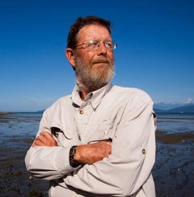

Sea Lion Plot Thickens
Our research into the Sea Lion Decapitation Ring lead us to the much more interesting and prescient ban on Sea Lion hunting, or culling. The difference being that culls are where the animals are simply killed, where hunts are where the animal is killed, then retrieved for some purpose. Sea Lion culls were a regular thing up until the 1970's, where they were outlawed in BC.
With the explosion in population of the Sea Lions, there have been renewed calls for a yearly culling operation, in order to help the local salmon populations. That culling the predator population, Sea Lions, would increase the prey population, salmon, is quite obvious and shouldn't be controversial.
CBC:

TDC_ARTICLE_STARTFisheries scientist Carl Walters, a professor emeritus with UBC, believes culling the regions sea lions and seals could dramatically boost salmon stocks. He points to numerous studies showing how pinniped populations have been increasing, while salmon numbers have been plummeting.
"They're killing a really high percentage of the small salmon shortly after they go into the ocean, about half of the coho smolts and a third of the chinooks," he said.
Advocates of a hunt are also pitching it as a way to help B.C.'s endangered southern resident killer whales, which feed mainly on salmon.
"The thing that would benefit southern resident killer whales is to see improved survival of small chinook salmon — and I think the only way we can achieve that is by reducing seal numbers," Walters said.
TDC_ARTICLE_STOPSo the best way to increase chinook salmon would be by culling the Sea Lion population, which has increased from 8,600 in 1970 to over 80,000 today. This would help both our fishermen, as well as our endangered orca population.
TDC_ARTICLE_STARTAccording to one study, the harbour seal population in the Salish Sea is estimated at 80,000 today, up from 8,600 in 1975. The study also says seals and sea lions now eat six times as many chinook salmon as are caught in the region's commercial and sports fisheries combined.
TDC_ARTICLE_STOPMakes sense then why a cull in the Sea Lion population would be so helpful. If merely half the animals were killed, then we could increase our fishing of chinook salmon by 300% over current levels.
TDC_ARTICLE_STARTIn early November, a group called the Pacific Balance Pinnipeds Society (PBPS) started using First Nations hunting rights as part of a plan to harvest 30 seals. The society plans to test the meat and blubber to see if it's fit for human consumption and other uses.
"We can look at opening up harvesting and starting a new industry," said Tom Sewid, the society's director and a commercial fisherman. "Since the [West Coast] seal cull ended in the 1970s, the population has exploded."
TDC_ARTICLE_STOPAlrighty, so it looks like everyone agrees. Sea Lion populations have exploded, Sea Lions eat millions of pounds of salmon, culling the Sea Lion population by just half, to merely 5x the 1970 population, would allow us to expand our fishing industry three times over.
TDC_ARTICLE_START
Others disagree, including Peter Ross, the vice-president of research and executive director of the Coastal Ocean Research Institute.
"Killing of seals and sea lions is not going to have any positive impact for any salmon populations in coastal British Columbia," he said.
While a few localized populations of salmon might benefit from a cull, Ross said climate change, habitat destruction and overfishing are all bigger factors in the overall decline of stocks.
TDC_ARTICLE_STOPAnd this is why I wrote this article. Get a load of Mr. Ross. Apparently "muh climate change," and "muh overfishing," are more important than the salmon slaughtering horders of Californian Sea Lions who have been proven to eat six times the salmon that people fish. Also, you may notice when you read what he says, that he immediately contradicts himself. First he says that cullings will have "no positive impact for salmon populations," and then he immediately says that "localized salmon populations might benefit from a cull." This is basically him being completely full of shit, but covering his ass just in case.
In the last article I wrote, about how these people are really just looking for ways to fuck over working class people, especially white working class people, here we have a prime example. Understand that Ross knows he's completely full of shit, he's just using this as an excuse to fuck over what he views as filthy peasants who are beneath him. This is what he looks like.
My spidey sense is tingling...